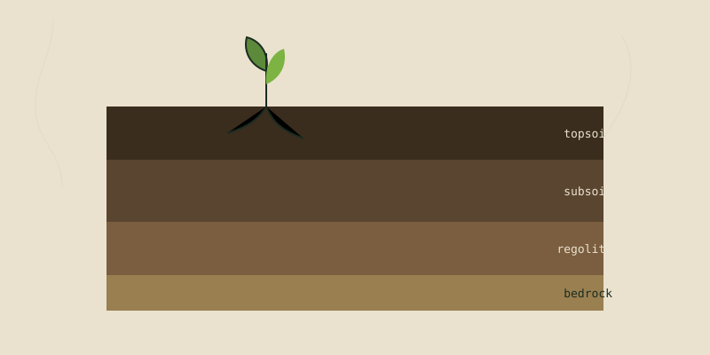
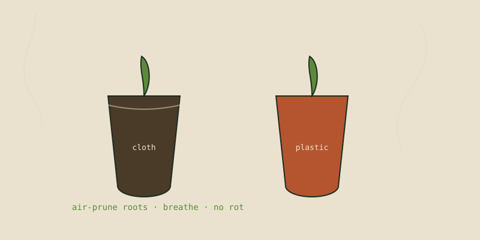
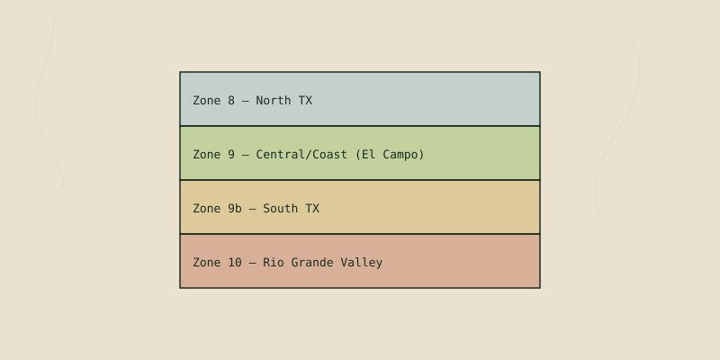
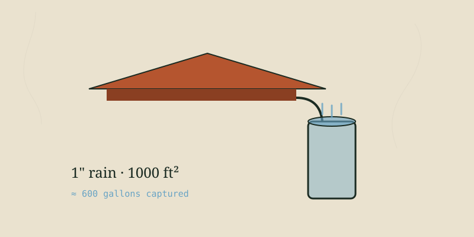

Growing & Soil
Soil, propagation, pots, and the craft of keeping plants alive.

How to Test Your Soil (Without a Lab, and With One)
Your soil is the whole game. Here's how I read it by hand, what a real lab test tells you, and how to fix what…

How to Clone Plants: Turning One Plant Into Ten
Cloning is just taking cuttings, and it's the cheapest way to multiply a garden. This is exactly how I propaga…

Which Pots Are Best? Why I Grow in Organic Cloth
After years of trying everything, I grow most things in non-bleached cloth pots. Here's the honest rundown of …

What Grows Best in My Area: A Texas Gulf Coast Planting Guide
Knowing your zone and your real seasons is worth more than any fancy technique. Here's how to figure out what …

Reading the Weather for Your Garden (Frost, Heat & the 7-Day Window)
How I use the 7-day forecast to decide what to plant, when to cover, and when to just wait. The single most us…
How to Take Plant Cuttings That Actually Root
The single most useful skill in the garden: turning one plant into ten for free. Here's exactly how I take sof…

How to Save Seeds So You Never Buy Them Again
Every heirloom seed is a promise: save it and it comes back true. Here's how to harvest, dry, clean, and store…
Every Way to Propagate a Plant, by Plant Type
Seed, cutting, division, layering, grafting, slips, cloves, runners — a field guide to which method works for …
Extending the Growing Season on the Texas Gulf Coast
Our problem isn't winter — it's summer. Here's how I push harvests through brutal heat and mild frost both, wi…
Growing Food in Containers: The Texas Patio Garden
No yard? No problem. A patio, balcony, or driveway can feed you — and in Texas, containers give you something …
How to Make Compost: Turning Waste Into Black Gold
The cheapest, most important soil amendment there is — and you're probably throwing the ingredients away. Here…